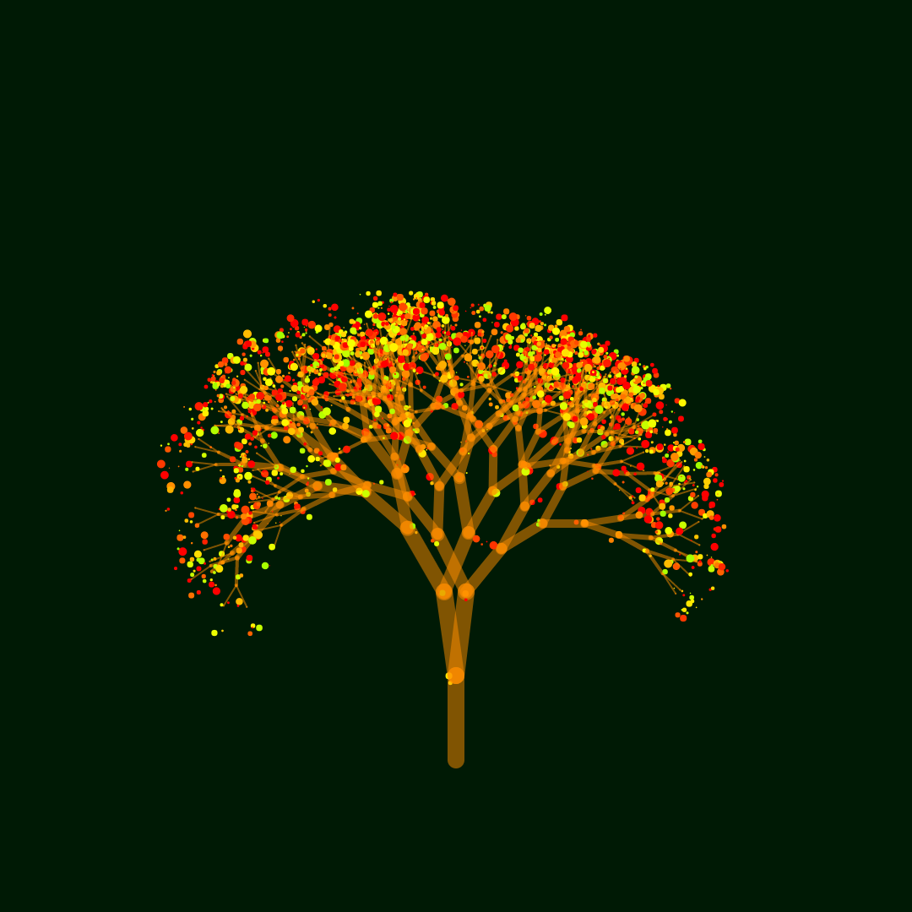
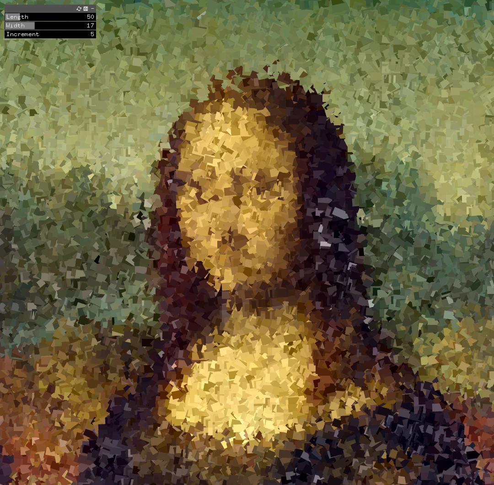
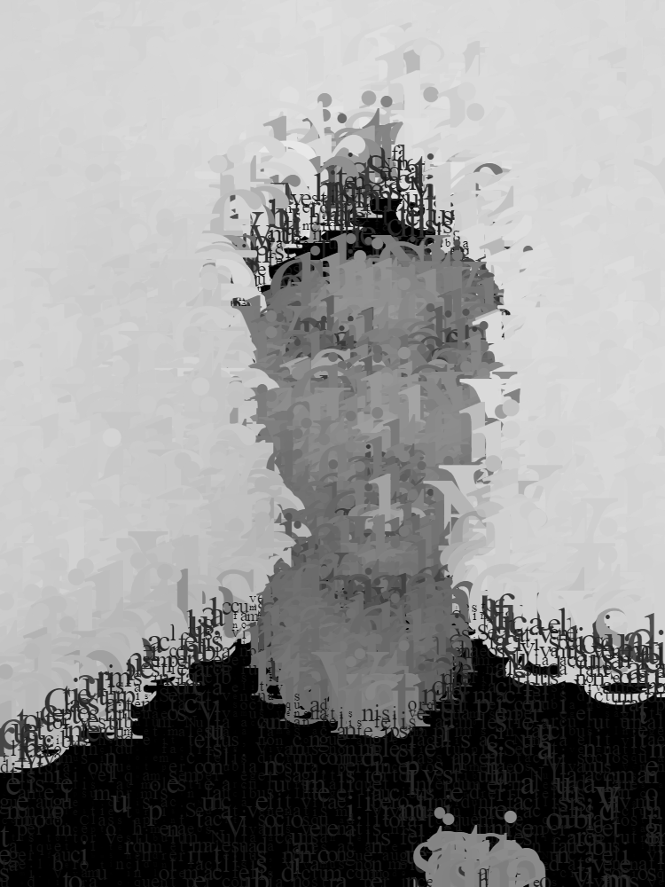
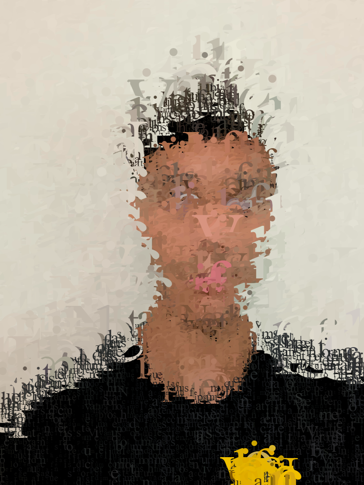
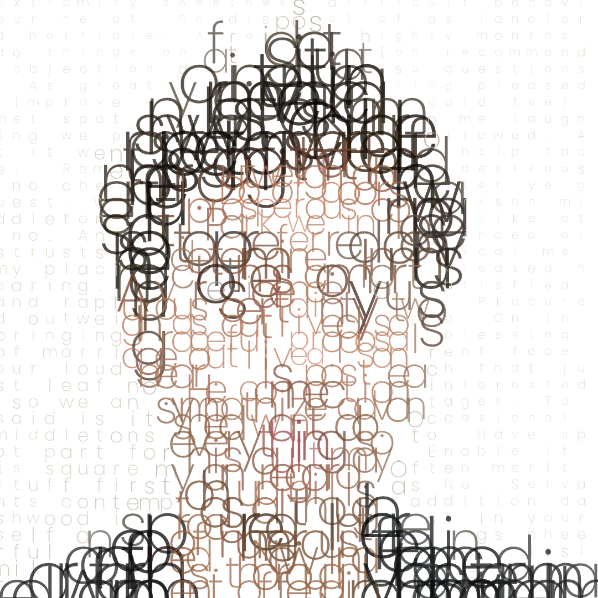
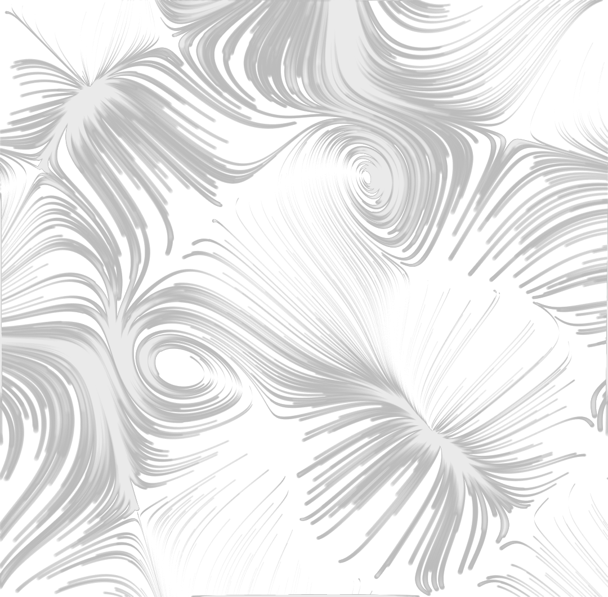
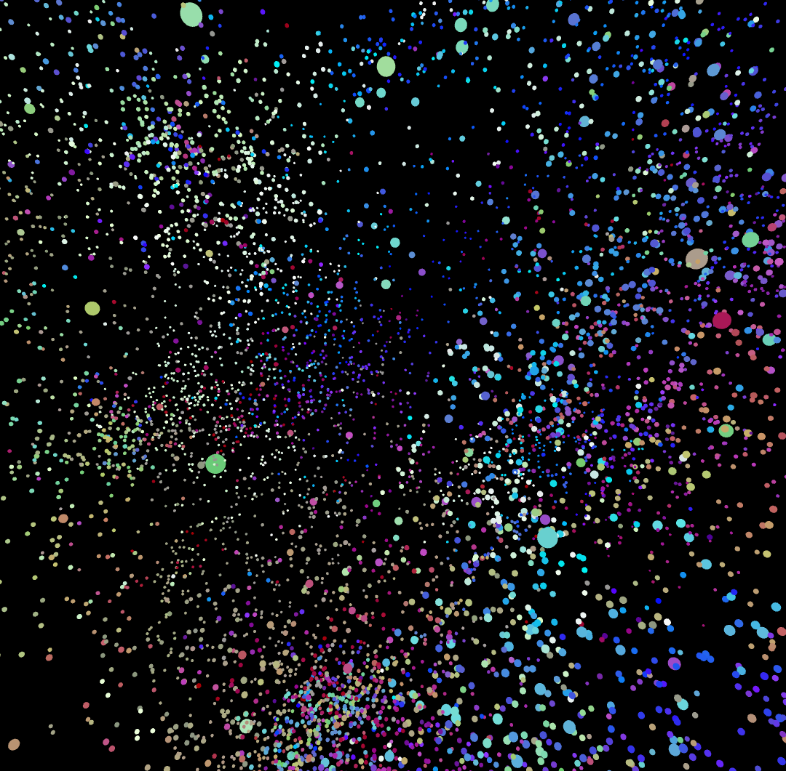
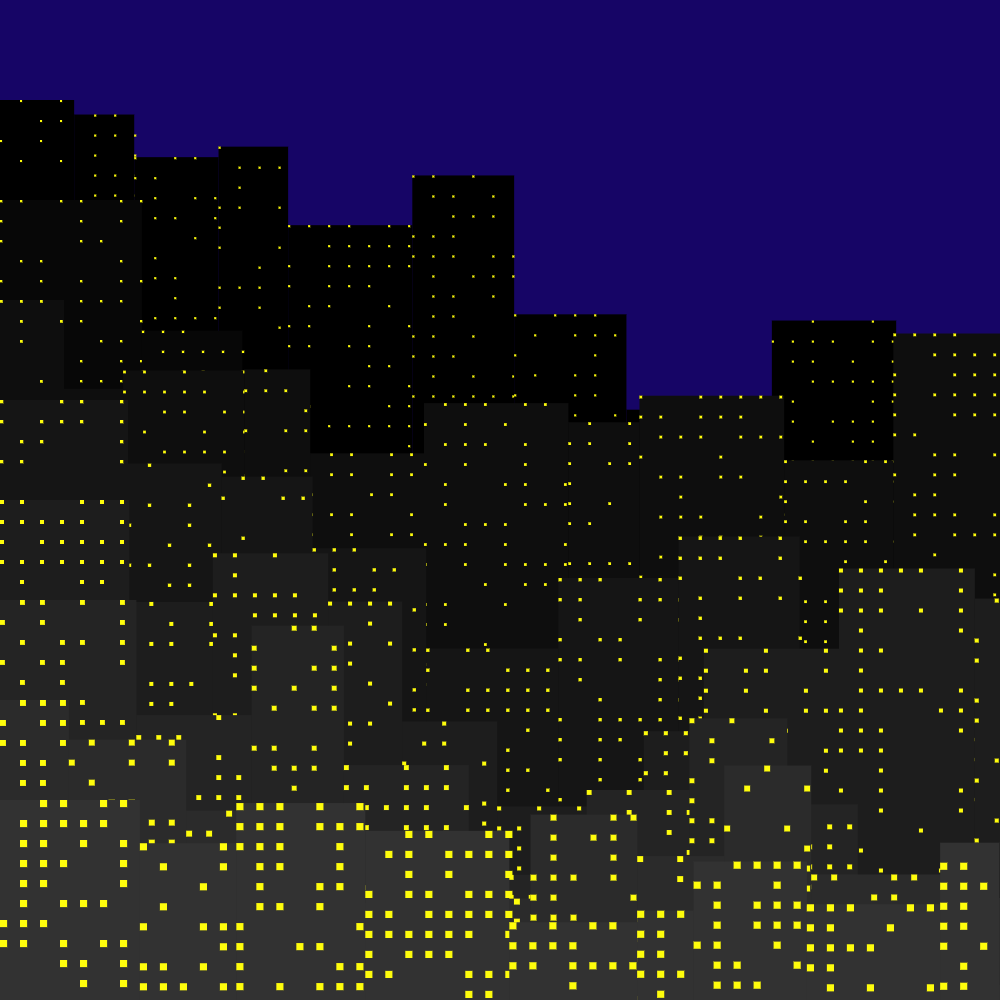
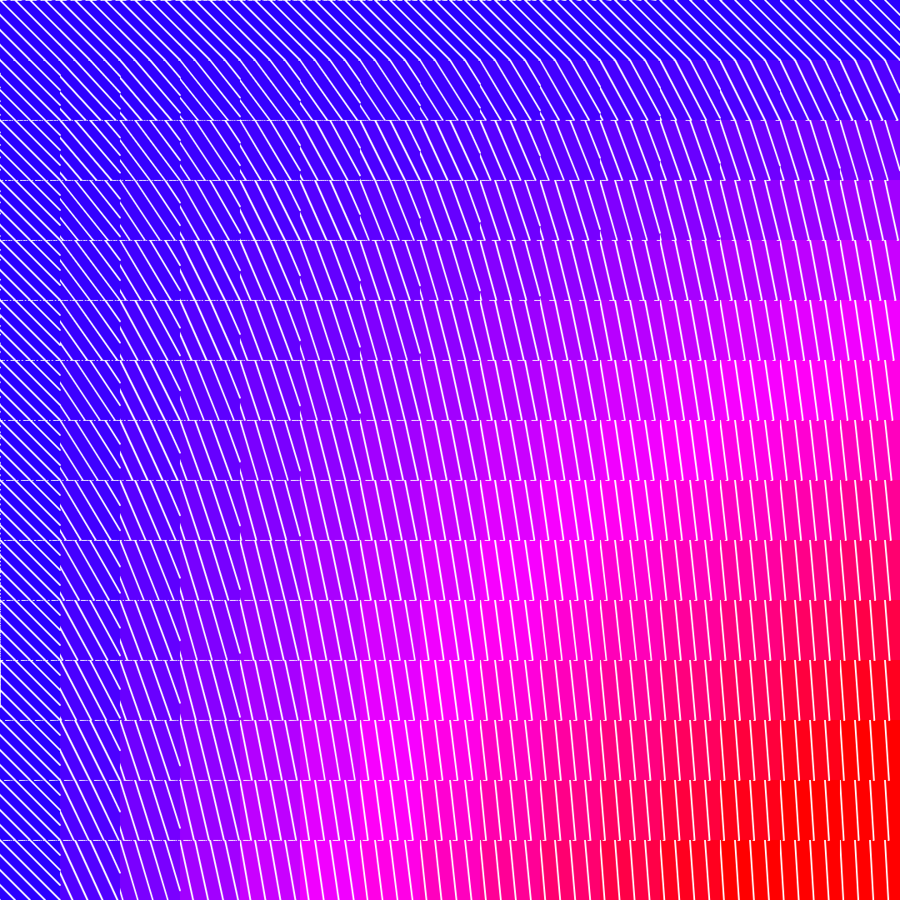
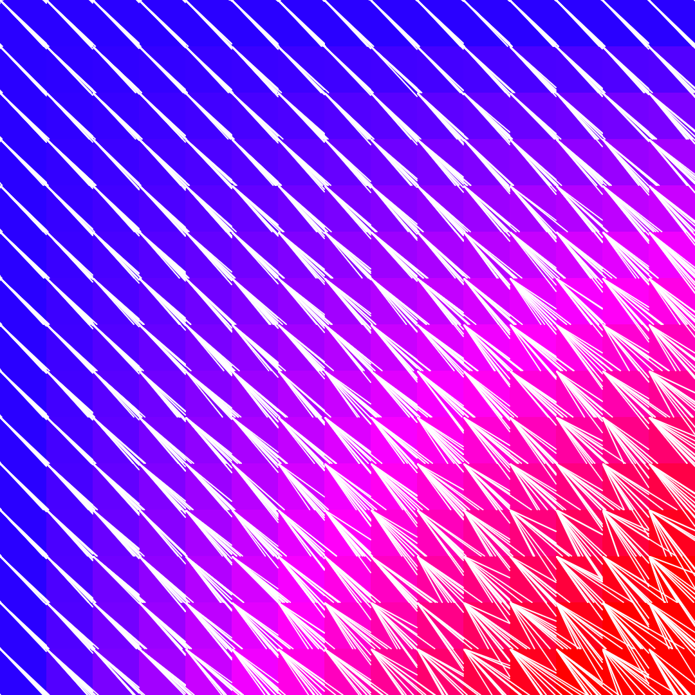

About Me
Education
Experience
Skills
Interests
Generative Art
Generative art refers to art that has been created with the use of an autonomous system. Here are some pieces I generated with p5js, processing, and openFrameworks (including the main portrait).










Projects
Computational Social Science
I am working on a Youtube channel, where I post videos of how to utilize computation to conduct studies within social sciences. For instance, natural language processing can be used to annalyze and compare the different texts found within certain groups.
NLP Models for Educational Technologies
I am working on a webapp, where I try to utilize the state-of-the-art models (for instances the models built upon GPT technologies) in order to assist students in reading intensive classes. If you are interested in assisting or would like to know more, please reach out through one of my social media links!